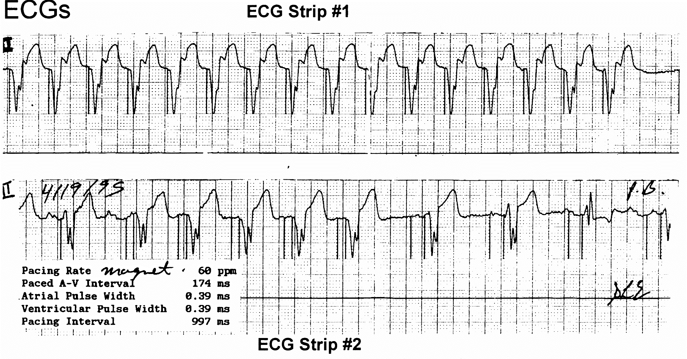

Answer: B
The initial part of the ECG shows sinus tachycardia with BiV pacing. When the
sinus rate is above 125bpm (=upper rate limit), the device fails to track. The
rhythm then is sinus tachycardia with LBBB.
PMT = AS-VP at rapid rate.
PMT = AS-VP at rapid rate.
RELATED


Frontal QRS axis during different pacing configurations.
Europace 2012
CLUE to LV/RV/BiV pacing
- Use leads V1, I, aVL, and III.
- Positive in V1, Q in I and aVL suggest left to right forces = LV pacing.
- Positive in III suggests force from left lateral area = LV pacing.
Upper rate behaviours in dual chamber pacemaker
such as 2:1 block, WKB, or PMT.
occur in only atrial tracking mode or DDD.
happen only if V pacing is required (AS-VP).

such as 2:1 block, WKB, or PMT.
occur in only atrial tracking mode or DDD.
happen only if V pacing is required (AS-VP).
Pacemaker Wenckebach
(DDD 50/110, SAV120, PAV 150, PAVRP 200)

Pacemaker mediated tachycardia from loss of atrial capture